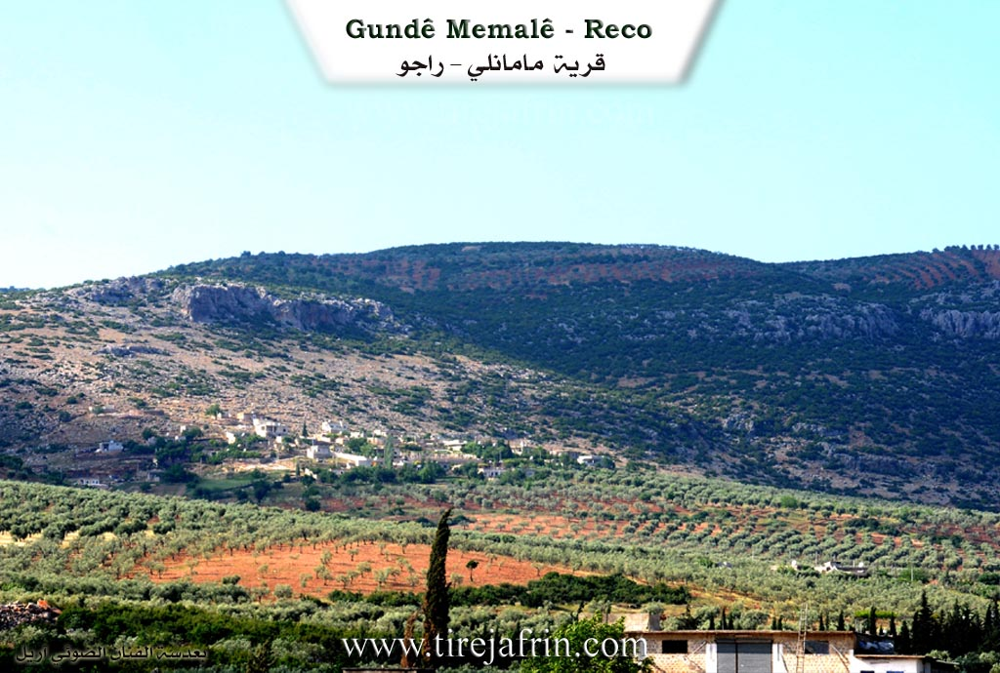

General Information
Nahiya (Subdistrict)
Reco
Also Known As
Mamila, Memala Western, Memala Xerbî, Memola, Western Mamanli, الثدي, مامالي, مامانلي غربي
Tribes
Mamaliye, Memala, Memaliye
Families, Clans, etc.
Camû, Ce'efer, Ce'fera, Ebdo, El Xalid, Elî Beg, Elî Bêg, Fire Hesen, Haşaşa, Hec Hesûk, Heşoş, His Qût, Kîl Osib, Mala Bilal, Mala Fûçik, Mala Hebeş (Qadir), Mala Hesen Fotke, Mala Heydû, Mala Ibrahîm, Mala Keşat, Mala Me'mo, Mala Qember, Mala Simo, Mala Sîno, Mala Xelfan, Mala Xolo, Mala Şoro, Mala Şêxo, Me'emo, Mihemed Kurdî, Nebû, Simikê Olqonî, Simo, Yûsiv, Zehû, Zibara

Photos



Basic Information about Memala
Source: Ax û Welat
Shrines: Ziyaret
Other Landmarks: Mala Xarê
Source: Afrin 366
Etymology: Me'milo or Mehmûla; likely derived from the figure Mehmûlo whose tomb is located in the village
Shrines: Tirbê Mehmûl
Trees: Cernik
Other Landmarks: Xwaran, Sarinc
Summaries
I. Summary from TirejAfrin Site (English) of Memala
Source: https://www.tirejafrin.com/site/kura%20afrin%20%20%20Reco%20-memala%20xarbe.htm
The following is stated in the book Çiyayê Kurmênc (Efrîn): A Geographical Study: Memala, Mamalî, The Breast. /1813 inhabitants - 218 hectares - 3km - 740m/:
Etymology and History
Memala: A Kurdish tribe found in Milazgirt (Malazgirt) in Northern Kurdistan (Lerch, p. 48). Istakhri says: The "Mamaliye" are one of the Kurdish tribes in Fars (Musilli, p. 455).
Geography and Location
It is located on the southwestern slope of Çiyayê Bilalîko (Mount Bilalîko) at the site of Qiliq or Kelacik or the Fort (named for the ruins found upon it). The village consists of two parts: Eastern and Western, separated by a valley through which a paved road passes.
The book Efrîn... Her River and Her Green Hills states: Memala Rojjava (West Memala): A village in Çiyayê Kurmênc belonging to the Reco district, Efrîn region, Heleb province. It is a large village located on the southeastern slope of the Qiliq limestone height, on whose slopes oak forests and pastures are scattered. It overlooks agricultural land with fertile red soil to the east and south.
It is located 3 km from the town of Reco heading north. It is bordered to the north by a high mountain range planted with oak trees and the village of Heyder Oba; to the south by a slope and a plain planted with olive trees, the town of Reco, and Hecî Xelîl; to the east by a rugged mountain range, a deep valley, the asphalt road heading to Bilalîko, the Memala farm (mezre), and the village of Hecmanlî; and to the west by a valley and the village of Maskanlî.
Housing and Infrastructure
The number of houses is approximately 35, and its age is about 300 years according to the statements of one of the elderly residents. Its dwellings are stone and mud with flat wooden roofs, while the modern ones are cement.
A stricture of electricity is available, as well as a primary school, a leveled dirt road (unpaved), and a telephone network derived from the town of Reco. The residents drink from a well belonging to the state.
Economy
The residents work in rain-fed agriculture (olives, grains, legumes, vines) on an area amounting to 218 hectares. They raise sheep and goats. A portion of the residents works in the charcoal industry using oak wood, alongside raising sheep and goats. The mentioned village is beautiful due to its elevated location and the wide plain planted with olive trees in front of it extending to the town of Reco.
Families
Among the families present in the village are:
Mala Hesen Fotke
Mala Şoro
Mala Şêxo
Mala Xelfan
Mala Bilal
Mala Fûçik
Mala Qember
Mala Hebeş (Qadir)
Mala Sîno
Mala Keşat
Village Mukhtar: Mihemed Qehreman
Information Source:- Ehmed bin Arif
- Sources
- كتاب جبل الكرد (عفرين) دراسة جغرافية Çiyayê Kurmênc (Efrîn): A Geographical Study by د. محمد عبدو علي Dr. Mihemed Ebdo Elî.
- كتاب : عفرين .... نهرها وروابيها الخضراء Efrîn... Her River and Her Green Hills by عبدالرحمن محمد Ebdulrehman Mihemed from the village of Qetme.
- Studies of Navenda Tirej Soft / Ebdulrehman Hacî Osman.
- Some residents of the villages.
Preparation and execution: Director of the Tirej Efrîn website: Ebdulrehman Hacî Osman
- 20/12/2013
II. Summary of Memala from Ax û Welat
Source: https://www.youtube.com/watch?v=GT0g8SnuGc8
The village of Memala, also referred to by residents as Memolê, is located in the Çiyayê Kurmênc region. The settlement is geographically divided into two distinct sections known as Memolê Xerbî and Memolê Şerqî. The community comprises approximately seventy households. The social structure is described as highly cohesive, with residents stating they are all relatives and neighbors who originate from the same stock, though they do not specify a particular tribe or family name during the proceedings.
Daily life in Memala is deeply connected to the agricultural cycles of the region, specifically the reliance on rainfall. The villagers preserve an ancient collective ritual called the rain prayer to combat drought. During this event, men and children form a procession through the village streets. They chant supplications such as "Ellah baran, Xwedê baran" and specific verses describing the environmental distress, chanting that the "earth and sky have cracked" and "servants and animals have suffocated." A central part of this custom involves zarkê koplê, where participants splash water on each other to mimick the falling rain. The procession moves from house to house and eventually leads to a sacred site simply called the Ziyaret. At this shrine, the community shares a meal of bulxur and an elder recites prayers including verses from the Quran.
The culinary culture of Memala is distinct and relies on local produce. Women in the village prepare traditional dishes such as semîsemka, a type of pastry, and kutayiyê. Other foods prepared for communal gatherings include dolma sarma, şorbeşîr, şberek, and kufte. One villager details the preparation of pincar, a wild plant dish cooked with onions and olive oil, which is seasoned with lemon.
Cultural memory is maintained through the performance of oral epics. A local singer named Çemende performs the famous epic of Memê Alan. He attributes his knowledge of the song to the renowned master Cemîl Horo. Through his performance, the village connects to the broader Kurdish literary heritage, invoking names and places such as Cizîra Botan, the Mîr Ezîman, Rengîn, Omer Beg, and the legendary lovers Mem and Zîn.
II. Summary of Memala from Afrin Flo
Source: https://www.youtube.com/watch?v=nHVVf9J4Wgs
The documentary focuses on the village of Me'mela, which is situated in the Reco district of the Efrîn region. The narrative of this specific recording does not discuss the physical geography, ancient ruins, or founding history of the settlement. Instead, the identity of Me'mela is presented entirely through its living culture and the social cohesion of its youth. The village is home to a folklore ensemble known as Koma Aştyxwaz, meaning "The Peace Seeking Group." This group is described by its members as a "gundê selametiye" or a village of safety and peace, dedicated to preserving the heritage of the broader region.
The social structure of the village is represented by the leadership within this cultural organization. Xelîl, also known as bavê Siyamend or Xelîl Kurdî, identifies himself as the mixtar (headman) of Me'mela. He plays a central role not only in civic administration but also in the arts, serving as the drummer for the ensemble. He explains that the group was formed to serve the 366 villages of the Efrîn area, ensuring that their voice is heard throughout the region. He notes that the group operates without external financial aid, relying on the dedication of the villagers to maintain their traditions.
The training and artistic direction are managed by Mesûd, who acts as the "reîs firqa" (group leader/trainer). He is responsible for teaching the intricate steps of the dances to the youth. Musical accompaniment is provided by Rêber, a tembûr player who has been practicing his craft for three years. The group includes a diverse range of village youth, including a young boy named Aram and young men named Wecî, Ciwan, Mihemed, Dilovan, Nîzam, Talebanî, 'Emer, Şewket, Şewqî, and Xebat.
The cultural history of Me'mela is expressed through the specific ancient dances performed by Koma Aştyxwaz. The members emphasize that these dances are "tûras" (heritage) passed down from their fathers and grandfathers. During the documentary, they perform distinct routines with specific names. They begin with a dance called Gelîniyê, followed by a routine named Çançanê. Later, they introduce a dance called Qeltere (or Qelter), which is noted as being particularly unique. The final performance highlighted is a dance named Kebûkê. These performances serve as the primary historical record for the village in this context, acting as a vessel for the collective memory of Me'mela.
II. Summary of Memala from Afrin 366
Source: https://www.youtube.com/watch?v=tFTYibXN5H4
The documentary records a visit to the village of Me'milo (also referred to as Mehmûla or Me'mela) in the Afrin region. The host accompanies a young boy named Salar, approximately seven years old, who is visiting the village to see the ancestral home of his late grandfather, Ibrahîm. The journey passes through Ereb a Mesawir before reaching Me'milo, which is situated opposite the village of Emara. The landscape is described as rocky ("qeroc") and high in altitude, enjoying a cool wind that comes from the direction of Xwaran.
The village is historically significant to its residents for its ancient roots and communal infrastructure. A prominent elder, Xolo (also identified as Ebû Ehmed), aged around 75, serves as a primary source of information. He notes that the village contains approximately 450 households. Xolo identifies the main social groups in the village, listing them as Elî Beg, Zibara, Mala Simo, Ce'fera, and Haşaşa. While the host asks about tribes, Xolo and the host conclude that the village is known by these specific families ("malbat"). The villagers are primarily engaged in farming ("cotkarî"), traditionally using animals for threshing, and cultivating olives on the difficult, rocky terrain.
Several notable landmarks define the village's geography and spiritual life. The most significant sacred site is Tirbê Mehmûl (the Tomb of Mehmûlo), located under a tree; the speakers pay respects to Mehmûlo, implying he is a revered figure or ancestor associated with the village's name. Near this site, there is a specific tree named Cernik, which is remembered as a gathering place where weddings were held and water was distributed in the past. Additionally, the documentary highlights a communal Sarinc (cistern) built by the villagers' ancestors ("bavkalk"). This Sarinc remains a vital community hub where people and animals drink water, and passersby offer prayers for the spirits of those who constructed it. The village also contains a school and a mosque, the latter of which predates the memory of the elderly Xolo.
II. Summary of Memala from Afrin 366 2
Source: https://www.youtube.com/watch?v=rtShNNkq2yo
The documentary recording follows a journey through the Afrin region, beginning in the village of Memala and traveling through the town of Raco before concluding in Badîna. While the narrative does not focus on the founding history of a single village, it documents specific landmarks, infrastructure, and social connections along this route.
The journey starts in Memala, situated opposite the village of Masekoyê. Here, the narrator highlights a significant historical site featuring a large, ancient tree estimated to be 500 years old (pênc sed sal). Adjacent to the tree is a well identified as Bîra Erebî (Arab Well). This site includes old stone troughs (cernik) formerly used for watering livestock. The narrator notes that there are inscriptions (herf) on the stones, though they are damaged or illegible. While in Memala, the narrator visits the home of a relative named Hemûdê.
Leaving Memala, the route leads into Raco. Along the way, the narrator points out neighboring villages visible from the road, including Mîskê and Hec Xelîl. The town of Raco is depicted as a bustling local hub with a central market (çarşî) and a large mosque (camî). Near the entrance to the town, the narrator mentions a renovated site called Gozîk, where stone walls have been repaired, and notes a nearby children’s hospital (mistaşfa) that provides free services.
Continuing past Raco toward Badîna, the narrator identifies several local landmarks and intersections. These include Çota Omaro and a facility identified as the press of Hesenî Elî Miste. A distinct stop is made at a well known as Bîra serî Gêlê, located in an area also referred to as Geli Tîra. The narrator shares a personal history here, recounting that his late father planted the large tree standing next to this well many years ago.
As the journey nears its end, the route passes a junction called Qopê Hemşalekê and a site known as Qicikê mala Heydû. The latter is described as having two presses and the remains of an old fortress or castle (kela kevn), linked to the Mala Heydû family. The documentary concludes upon arrival in Badîna. This village is described as being as developed as a town (bajar), comparable to Raco in its facilities, possessing its own market, mosque, and pharmacy.
II. Summary of Memala from Multi Channel
The documentary provides an intimate look into the village of Mamel Uşaẍî, a community occasionally referred to locally as Ma'mela. Geographically situated in the Raco district southwest of Efrîn, the village lies eighty seven kilometers from Heleb and twenty seven kilometers from the center of Efrîn. The settlement is predominantly home to three hundred and fifty native families alongside thirty five displaced families who arrived from different regions. It holds a strong reputation for its vibrant agricultural production. Specifically, the village cultivates eighty thousand olive trees, consisting of the well known Zeytî and Xelxalî varieties, which collectively yield thirty five thousand tins of olive oil each year. The community also maintains significant herds of sheep and goats, along with expansive almond orchards.
Historically and socially, the Me'mo family, explicitly referred to as Mala Me'mo, plays a central role in the identity of the village. They are recognized as the foundational family of the settlement and proudly carry a long generational lineage of shepherds. In recent times, the village has also integrated displaced individuals into its social fabric. For instance, Sa'ad Necmuddîn el Xalid, a young boy who fled from the town of Kefr Nûran in the western Heleb countryside, now resides and works in the village.
Residents such as Umm Xelîl actively preserve traditional ways of life and maintain a deep connection to regional heritage. During her interview, she proudly wears traditional clothing originating from the Cizîrê and Hesekê regions, explaining how the wide sleeves of her garments are traditionally unfastened and used during celebratory dances. Her home functions as a living museum of rural life, filled with ancient tools including a spinning implement known as a teşî and a weaving machine passed down from her mother that is over one hundred and fifty years old. She also meticulously prepares traditional rural foods such as duberke. This dish features a mixture of pomegranate molasses, pepper, and local herbs called mustîka kamundî, which is traditionally spread on flatbread and eaten by workers during the early morning olive harvest.
Other local inhabitants, like Ebû Mes'ûd and Umm Mes'ûd, share valuable insights into the daily survival and culinary customs of the village. Because they cannot afford commercial heating gas, they rely entirely on gathering natural firewood from the mountain forests to prepare for the cold winter months. They also cook traditional seasonal dishes such as dolma, boranîye, and kutilk, which showcase the resourcefulness and enduring culinary traditions of the community.
The pastoral history of Mamel Uşaẍî is kept vividly alive by local shepherds who continue to play the traditional wind instrument, known locally as a fîq or kaval. One shepherd from Mala Me'mo plays inherited ancestral melodies passed down directly from his grandfather. These traditional tunes include specific pieces named Us û Ezîz, Dalêl, and Lobab. Furthermore, the documentary highlights local musicians Hesen and Îzet, who perform traditional music on the buzuq. They provide the rhythmic accompaniment for villagers dancing the Ciftetellî, a traditional regional dance performed by two people moving together to a two string melody. Collectively, these cultural practices illustrate a resilient community deeply rooted in its pastoral origins, agricultural lifestyle, and rich musical heritage.
II. Summary of Memala from Multi Channel 2
History: The documentary explores Me'emelo, frequently known as Me'emel Uşaxî, which is a Kurdish village located in the Efrîn region and administratively governed by the Raco district. It was established approximately 500 years ago during the early Ottoman period. The original settlers migrated southward from the Amanos mountains, a range now located across the modern Turkish border. These early inhabitants were primarily shepherds who intentionally sought out this rugged, mountainous terrain at an elevation of 850 meters. They chose this isolated location to safely graze their herds of goats and sheep, while also protecting themselves from bandits and tax collectors.
Naming: The village name is deeply tied to its historical founder. The word Me'em is a Kurdish abbreviation for the name Mehmûd. The Ottoman authorities registered the growing settlement as Me'emel Uşaxî, which translates to the village of Şêx Mehmûd and his children. In later years, the Syrian state introduced an Arab translation to official records, calling the settlement Me'amil.
Social Structure and Families: The village population grew entirely through the descendants of these early patriarchs. The oldest established lineage is the Me'emo family. Another prominent early family is the Heşoş, who take their name from an ancestor called Hesen Şoş. Later in the village history, a man named Simikê Olqonî arrived, married a woman from the Me'em family, and had several sons who formed new family branches. These branches include the descendants of Elî Bêg, Simo, Ce'efer, and Mihemed Kurdî. Additional prominent ancestors include Hec Hesûk, who was born in 1885. Over the centuries, the village expanded across the topography, leading to the formation of two distinct neighborhoods known as Gundê Jêr, the lower village, and Gundê Jor, the upper village. Today, the village hosts both its original inhabitants and displaced people from places like Heleb, living together cooperatively.
Sites and Landmarks: The settlement is bordered by neighboring villages including Umer Uşaxî, Xelîl Kolko, Korkan Tahtanî, and Sarî Uşaxî. Historically, the village contained a stone prison known as Sicin and an ancient olive press called Me'esere Qadîme, both dating back nearly five centuries. Traditional houses were built with a unique local glass like stone called merxi alongside standard limestone. The regional architecture features distinctive interior arches, with wooden ceilings originally transported all the way from Heleb. The homes proudly display symbols of Kurdish culture, such as portraits of the classical poet Ehmedê Xanî.
Economy and Culture: The villagers are celebrated for their traditional agricultural lifestyle, heavily relying on olive, walnut, almond, fig, and grape cultivation. They are especially noted for producing grape molasses by hand and cooking traditional Kurdish dishes like donk, which is made from bulgur, tomatoes, and peppers. Economically, they maintain strong historical trade ties. In the past, residents would walk 90 kilometers to trade in Heleb or travel to markets in Kilis, Mabeta, and Raco. Despite modern economic hardships and the migration of young people, the community prides itself on deep rooted hospitality, resilience, and a powerful connection to its ancestral land.
Transcriptions and Subtitles
| Source | Video | Subtitles | Transcript |
|---|---|---|---|
| Afrin 366 1 | Watch Video | Download SRT | View Transcript |
| Afrin 366 2 | Watch Video | Download SRT | View Transcript |
| Afrin Flo 1 | Watch Video | Download SRT | View Transcript |
| Ax û Welat 1 | Watch Video | Download SRT | View Transcript |
| Multi Channel 1 | Watch Video | Download SRT | View Transcript |
| Multi Channel 2 | Watch Video | Download SRT | View Transcript |
Foundation/Origin Information of Memala
Among the families present in the village: Al Hasan Fawtakeh, Al Shoro, Al Sheikho, Al Khalfan, Al Bilal, Al Fotshak, Al Qambar, Al Habash Qadir, Al Sino, Al Kushaa.
Source: TirejAfrin Site
The village's origins lie with two nomadic families who initially lived below a mountain before settling the area, with key founding figures being Ma'm, Lawê, Hemze, and Hebîb. The community grew and organized for mutual protection against bandits, known locally as eşqiya.
Source: Ax û Walat Transcript
Possible Village Name Meaning of Memala
Memala is a Kurdish tribe found in Malashgerd, northern Kurdistan. Al-Istakhri says the "Mamaliya" are among the Kurdish tribes in Fars.
Source: TirejAfrin Site
The name "Mamila" itself is believed to be derived from "Ma'm û Lawê."
Source: Ax û Walat Transcript
V. Links
- Tirej Afrin:
https://www.tirejafrin.com/site/kura%20afrin%20%20%20Reco%20-memala%20xarbe.htm - Ax û Welat:
https://www.youtube.com/watch?v=GT0g8SnuGc8 - Afrin Flo:
https://www.youtube.com/watch?v=nHVVf9J4Wgs - Afrin 366:
https://www.youtube.com/watch?v=tFTYibXN5H4 - Afrin 366:
https://www.youtube.com/watch?v=rtShNNkq2yo - Tirej Afrin:
https://www.tirejafrin.com/site/kura%20afrin%20%20%20Reco%20-memala%20shexe.htm - Multi Channel:
https://www.youtube.com/watch?v=G9bQzvXzpjw - Multi Channel:
https://www.youtube.com/watch?v=HyaUOZGwAPk